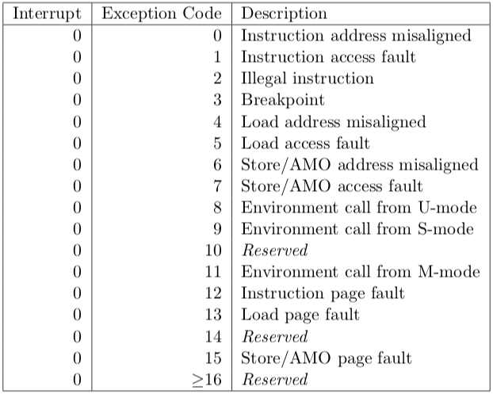

This lab focuses on using interruptions to create a snake game. The player should control the snake to eat as many apples as possible within the time limit. For the display and countdown purpose, we use the Memory Mapped device and timer tool on RARS. The exception handler used to manage these exceptions is created by the student.
There are different kinds of snake games. To keep the complexity of implementing this lab manageable, this snake game is simpler than other ones available online. Here is one snake game, which is similar to this lab, to help you become familiar with the concept.
The level of play --- easy, medium, and hard --- must be selected before the game begins. The level determines the amount of starting time as well as the bonus time awarded after the snake eats an apple. The goal of the game is for the player to control the snake to eat as many apples as possible.
The goal of this lab is for students to become familiar with the concepts of interruptions and exceptions, to gain practical experience programming an exception handler in RISC-V, and to improve their programming skills.
In this snake game the player starts with an initial time budget to control the snake. When the time is up or the snake hits a wall, the game is over. Whenever the player leads the snake to eat an apple, they are awarded bonus time.
The game has three levels and both the initial time budget and the bonus time are determined by the level selected at the start of the game. In this lab the following times should be used:
| Game Level | Initial Time Budget(seconds) | Bonus Time(seconds) |
|---|---|---|
| 1 | 120 | 8 |
| 2 | 30 | 5 |
| 3 | 15 | 3 |
To create this simple snake game in RISC-V, write a program that reads commands from the keyboard input, handles timer interrupts and manages the display output. The snake game uses two screens for display. One screen is displayed after the other. After the start screen, there will be the game screen.
1 2 or 3 is recognized. There is no need
for the player to type enter. Once your program recognizes one
of the three numbers the game begins. There are two inputs to the game, both provided by interruptions:
Keyboard and Display MMIO Simulator.
Once the typed character is one of w, a, s, and d, the snake should
change its moving direction accordingly.The square has 11 rows
and 21 columns(including the rows and columns for the walls).
The numbers of the rows and the columns are not the same to
account for the different horizontal and vertical gaps between
characters on the screen. The goal it to produce a window that
appears approximately square for the player. See this Example Execution). Given that the indices
of the rows and columns start at 0, the walls are displayed in
row 0, row 10, column 0, and column 20. The snake moves in rows
1-9 and columns 1-19. The character # is used to
represent a brick on the wall. Once the walls are displayed they
never change.
To place an apple inside the square generate two random
numbers: one for row and another for column(You should invoke the random functions twice to
get these two random numbers). These numbers
must be within the range of the area where the snake can
move. The character a represents an apple. Once
the current apple is eaten by the snake, a new apple should be
generated.
A single character @ represents the head of the
snake and three * characters represent the body
of the snake. In the beginning, the snake is approximately in
the center of the square, and it moves to the right
automatically as soon as the game starts(You can refer to the
Example Execution). The snake should
move forward by one unit every second. The player can
control the snake to move up, left, down, and right by
pressing the w, a, s,
d. The characters W , A ,
S , D are not accepted as valid commands to
the game. If the player doesn't give any commands, the snake
keeps moving in the same direction until it hits a wall. When
the snake eats an apple, the player gets one point and bonus
time. To make this lab simpler, the size of the snake does not
increase. If the snake hits a wall, the game ends. In this
game, we ignore the situation when the snake hits its own
body. Thus, the player should avoid this situation as best as
they can.
Adding the bonus time to the remaining time is a bit tricky. Suppose the level of the current game is level 2(bonus time is 5s), the snake is about to eat an apple next second, and the remaining time is now 20s. When the snake eats an apple, it will have spent 1s moving to the position of the apple. As a result, the new remaining time should be 20 - 1 + 5 = 24 seconds.
When the game ends, the snake should stop moving, and the countdown should stop.
This lab uses external interrupts from hardware. The role of four CSRs (Control and Status Registers) are important for the use of interrupts:
ustatus (User Status Register, CSR#0) is a 32-bit
register that controls and manages user-level interrupts in the hardware thread
(hart). To enable user-level interrupts set the 0th bit of this register
to 1.uie (User-Interrupt Enable Register, CSR#4) is a 32-bit
register that controls the types of interrupts that are enabled using a bitmask.
Bits 4 and 8 are relevant for this lab. The 4th enables user-level timer interrupts.
The 8th bit enables user-level external interrupts. These bits must be set to 1 to
enable interrupts from the timer and the keyboard.utvec (User Trap-Vector Base-Address Register, CSR#5)
is a 32-bit register that controls where interrupts are handled. The register
holds the address of the interrupt handler that should be called when an interrupt
or exception occurs.ucause (User Trap Cause Register, CSR#66) is a 32-bit
register that identifiies which type of interrupt is being handled. After an exception or
an interrupt, this register holds the interrupt/exception code to help identify
its cause. An exception code is stored in the first 31 bits of ucause and the
last bit indicates whether or not it was an interrupt or an exception. To
check what type of exception/interrupt occurred refer to the table. These CSRs can be set by using the CSR instructions. For example, to enable
user-level interrupts in ustatus use "CSR Read/Write Immediate"
instruction: csrrwi zero, 0, 0x1. Or use pseudo-instructions to read
and write to the CSR registers. For example:
csrr t0, 4 # read from CSR#4 to t0
csrw t0, 6 # write whats in t0 to CSR#6
csrwi 0, 0x4 # write 0x4 to CSR#0
Once an interrupt is raised it must be handled in the interrupt
handler created in this assignment. An interrupt handler is
analogous to a normal function but there are some key
differences. An interrupt can occur at any time, therefore the
handler must guarantee that all registers are restored to their
original values after the handler finishes. Thus, the handler must
save any register that it uses (not just the s
registers) and the handler must restore the original values to
these registers before returning. Also, the instruction
uret must be used to leave the interrupt handler
instead of the jr ra instruction that is used to
return from a normal function. Again, a student should not call functions exterior to the handler if they are using the user stack point.
Use the Keyboard and Display MMIO Simulator, available under the
"Tools" menu in RARS, to interact with the simulator. Display the
simulator in the display section, and input commands in the keyboard
section. Don't forget to click "Connect To Program" after assembling the program
and before running it.
Generally, devices have two registers associated with them, a control, and a data register. The control register relays information about the device's state, and the data register relays data to or from a device. A description of the control and data registers for the keyboard and display can be found in the Memory-Mapped IO section.
A separate keyboard interrupt occurs for every key pressed when the keyboard interrupts are enabled. Therefore, the user program receives one character at a time.
In RISC-V, timing functionality is managed by the timing hardware thread
, maintaining the time asynchronously and allowing the program to raise
an interrupt at a specific time. To do this the core keeps track of the time in
the 64-bit register time which holds the current time (in milliseconds)
since the program started. To generate a timer interrupt at a specified time,
the value in the register timecmp must be set. Each time the timecmp
register is used, the student must reset the timecmp register with the new time
each time . A description of the
time and timecmp registers can be found in the
Memory-Mapped IO section. To simulate RISC-V timing functionality
use the Timer Tool under the "Tools" menu in RARS. Don't forget
to click "Connect To Program" and "Play" after assembling the program and before
running it each time you run the program.
Memory-mapped IO allows interaction with external devices through an interface pretending to be system memory. This mapping allows the processor to communicate with these devices using the load-word and store-word instructions. Here are the memory mappings and descriptions of important I/O registers for this lab:
| Register | Memory Address | Description |
|---|---|---|
| Keyboard control | 0xFFFF0000 |
For keyboard interrupts to be enabled, bit 1 of this register must be set to 1; after the keyboard interrupt occurs, this bit is automatically reset to 0. |
| Keyboard data | 0xFFFF0004 |
The ASCII value of the last key pressed is stored here. |
| Display control | 0xFFFF0008 |
Bit 0 of this register indicates whether the processor can write to the display. While this bit is 0 the processor cannot write to the display. Thus, the program must wait until this bit is 1. |
| Display data | 0xFFFF000C |
When a character is placed into this register, given that the display control
ready bit (bit 0) is 1, that character is drawn onto the display. If the
character is the bell character (ASCII code 0x07) the display will
move the cursor and the bits 8-19 and 20-31 correspond to the row and column
respectively. View the image. |
| Time | 0xFFFF0018 |
This is a read-only register that holds the time since the program has started in milliseconds. |
| Timecmp | 0xFFFF0020 |
When the value in this register is less than or equal to the value in
time a timer interrupt occurs. Writing to this register is
required to set up a timer. |
A solution to this lab must generate random numbers to determine the coordinate of the apple
Implement a Linear Congruential Generator (LCG). An LCG is a simple pseudorandom number generator (PRNG) algorithm defined as the recurrence relation:
Xi = ( aXi-1 + c ) % m
Where X0, a, c,
and m are constants. X0 is
the seed value, a is the multiplier, c
is the increment, and m is the modulus.
The first randomly generated number is
X1, the second is
X2, and so on.
With a PRNG, the sequence of generated numbers is always the
same for the same values of X0, a,
c, m. This consistency will be important for debugging the solution to this lab.
Here is a useful tool
for that generates a random sequence of numbers based on values of
X0, a, c, m that
can be used to test the program. To learn more about linear
congruential generators, view
this page.
Reading or printing syscalls cannot be used in this program. Instead, the program must use the interrupt/poll system to interact with the keyboard and the display.
When executing RARS with your own handler, runtime errors won't be shown in RARS as usual. Thus, a section of the handler that prints the line where an error occurred and the error code is provided. Use the table to the right to identify the error.
Make sure the handler does not call any functions. This ensures proper grading through the scripts and makes it easier to debug the code.
There are two phases in the execution of the game: reading the level of the game; and playing the game. Each of these phases can execute in a loop that changes the state of the display when there is an interruption caused either by the input of a command or by a timer. A possible design would be to reprint the display for every iteration of the loop. However, such a design could produce a flickering in the screen in certain types of monitors. Therefore a better design is to have flags that indicate when an action must be taken in the loop. For instance, the display only needs to be reprinted when its content has changed. Therefore the loop can simply check on specific flags and only take action when action is needed. Flags are variables that can store either 0 or 1. You can use flags to determine what should happen on the next iteration of the loop. By using different flags for the separate tasks of the program, you can ensure that you only execute tasks when needed.
The exit conditions for the loops are as follows. The
game-level screen loop exits once a valid input is received. The
typing-screen loop exits once the timer has run down to zero
seconds or the snake hits a wall. At that point you can simply end the game by returning
from the snakeGame function(after you have restored all the necessary registers).
Here is an example of how you can use a flag to determine when a program prints its output:
changed) that contains the value:0, if the output has not changed since
it was last printed and thus doesn't need to be printed. 1, if the output has changed
since it was last printed and thus should be
printed.Using flags in the loop also separates the code into tasks making it easier to understand and debug.
Note: You don't have to follow this. You can come up with your own methods as long as your game runs properly.The following lines appear in the .data section of
common.s:
This is similar to defining four global variables. These
variables are used in the linear congruential generator and
should contain the values Xi,
a, c, and m
respectively. These variables must be used in the
random function so that the solution works with
grading scripts. For testing, initialize the first three values
to any value, but keep mVar as 9.
You may add any other global variables that could be used to help run your program.
When an interrupt is raised, the program is paused and execution is transferred to
the interrupt handler. To ensure that the program can safely resume execution after
returning from the handler, the registers used by the handler must be saved upon
entering the interrupt handler and restored before returning. The registers cannot be
saved using the stack pointer because the stack pointer may be corrupted. Therefore, in
common.s we have allocated memory labeled iTrapData where
your handler may save registers. In common.s we have also placed the
address of iTrapData into the control status register #64,
uscratch. You can use uscratch and the CSR instruction
csrrw to save and restore all the values of registers used in the
handler.
After returning from the handler, all registers must have the same value as when the
program paused and uscratch should contain the address of the
iTrapData. The first instruction executed in the handler and the last
instruction executed before returning from the handler should be
csrrw a0, 0x040, a0, where a0 is chosen by convention.
Here is some sample code that saves two registers and a0 in the
interrupt trap data:
handler:
# swap a0 and uscratch
csrrw a0, 0x040, a0 # a0 <- Addr[iTrapData], uscratch <- PROGRAMa0
# save all used registers except a0
sw t0, 0(a0) # save PROGRAMt0
sw s0, 4(a0) # save PROGRAMs0
# save a0
csrr t0, 0x040 # t0 <- PROGRAMa0
sw t0, 8(a0) # save PROGRAMa0
...
Non-re-entrant handler: It is up to you how you manage the memory allocated for iTrapData.
If you allocate a specific address to save a given register --- for example, register s0 is always saved in Addr[iTrapData]+4 --- then your handler is not re-entrant.
You cannot enable interruptions while you are handling an interruption because doing so could cause the first value of s0 that you had saved to be overwritten.
Re-entrant handler: An elegant solution to create a re-entrant handler is to implement a stack in the memory area reserved for iTrapData.
The solution would have to handle an interrupt stack pointer. It would have to ensure that space is allocated in this stack for a new interruption frame
before interruptions are re-enabled. Once space is reserved in the interrupt stack to save the registers that the handler will use, then interrupts can safely be re-enabled. In this case we have a re-entrant handler.
It would be difficult to create a set of tests to determine if a handler is re-entrant. Therefore, in this lab we do not require the implementation of a re-entrant handler. It is acceptable to keep interruptions disabled while an interruption is being processed.
Write assembly code for the following functions in the file named snake.s
snakeGame:
handler:
handlerTerminate
is provided. It should catch interrupts/exceptions unhandled by the student handler, terminating the program and
providing debugging messages
jal ra, handler. Instead the address of the handler should be stored in the utvec control status
register (CSR #5) at the start of the program. When an interrupt
is raised, the execution of the program jumps to the instruction address stored in utvec random:a0: a pseudorandom number, Xi, between
0 and 8Xi from
Xi-1, a, c, and
m. Replace Xi-1 in memory with the newly
generated Xi.
XiVar, aVar, cVar, and
mVar from the data section of
common.s (see the subsection Global Variables in the Constraints section for information on
these variables). Before returning, the generated number
Xi must be stored in
XiVar. It should be possible to call
random multiple times, back-to-back. Therefore
any needed state update to the global variables must be
performed in the function. printAllWalls(the codes for this function have been given to you)
The functions below are optional suggestions. These are not required and will not be tested when grading this assignment. These function specifications are provided to help you understand the different modular parts of this assignment. This can help with the debugging process. Students are free to add any other functions that help them create their solution.
drawSnake (optional)
checkHitting (optional)
checkEatingApple (optional)
Write additional functions as needed. Code from the
materials provided in this course can be used in the solution as
long as the source is acknowledged. For example,
displayDemo.s in Code/Demo/ may be helpful
for printing to the Keyboard and Display MMIO Simulator
display.
(row <= 0 || row >= 10 || col <= 0
|| col >= 20). Assignments too short to be adequately judged for code quality will be given a zero.
There is a single file to be submitted for this lab:
snake.s should contain the code for both the interrupt handler
and the function snakeGame.
main label to this file.include "common.s"Code folder of the git repository